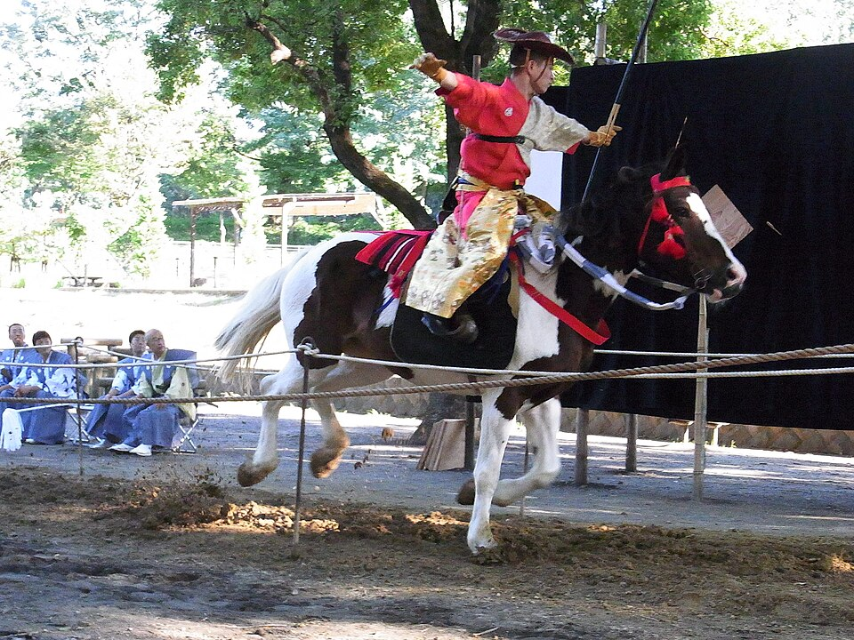
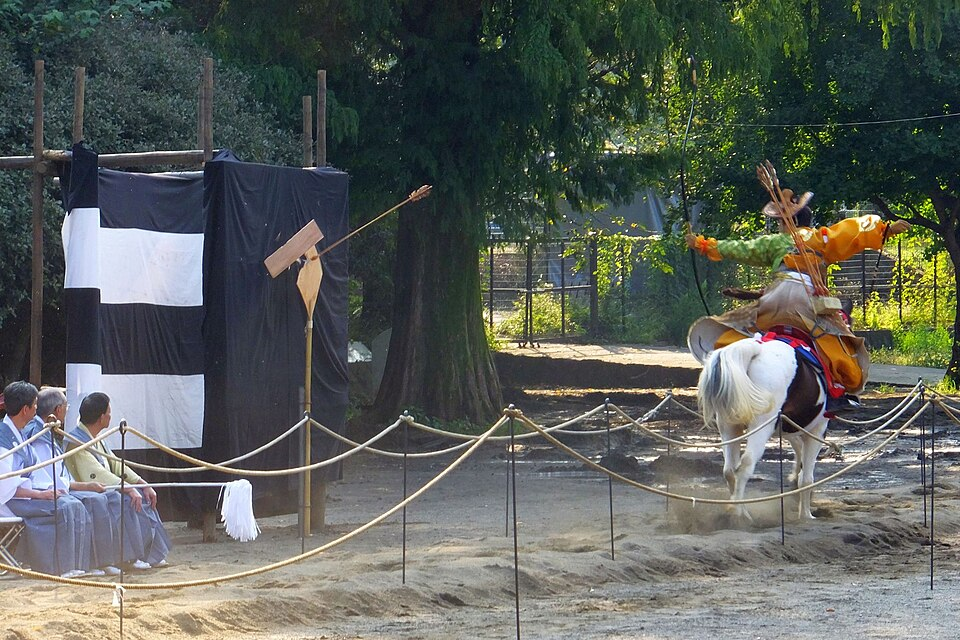
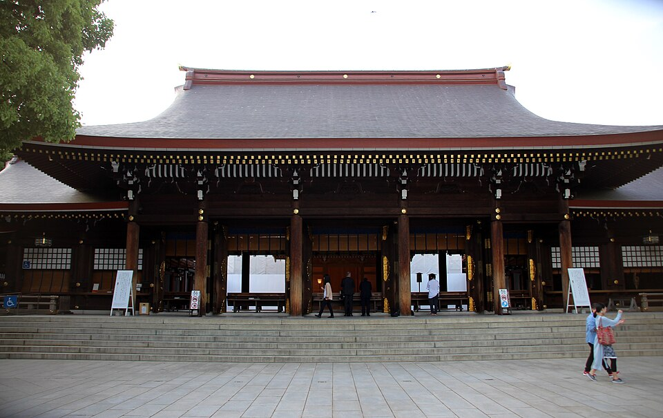

Tokyo · пн 12.10 · День спорта
Отель → Sendagaya
JR Akihabara, жёлтая линия Sobu, платформа 5, на Mitaka / Nakano, без пересадок 7 остановок до Sendagaya. От станции 5 мин до ворот Sendagaya сада.
Shinjuku Gyoen - бывший императорский сад
Сад принадлежал императорской семье, теперь национальный сад. Японский сад с прудами и мостиками, французский регулярный сад с платанами, английский пейзажный газон, а над деревьями небоскрёбы Shinjuku. Октябрь: 9:00-16:30. Пройди сад насквозь от ворот Sendagaya к воротам Shinjuku, там рядом станция Shinjuku-sanchome и много мест для перекуса.
Рядом с воротами Sendagaya Tokyo Metropolitan Gymnasium: сегодня там «Sports Festa 2026» с олимпийцами (анонс на tef.or.jp, всё по-японски).


Перекус у Shinjuku-sanchome
Лёгкое и быстро: холодная соба, онигири, суши на ленте. Поиск рядом с точкой:
Shinjuku-sanchome → Nishi-Waseda
Tokyo Metro Fukutoshin (коричневая, буква F), на Wakoshi (和光市), 2 остановки до Nishi-Waseda. Оттуда ~5 мин пешком до парка Toyama, участок Hakoneyama.
Yabusame - конные лучники (только сегодня)
Yabusame - стрельба из лука с галопирующей лошади, воинское искусство эпохи Heian и Kamakura. Всадник в старинном охотничьем костюме мчится по дорожке и на скаку бьёт по нескольким деревянным мишеням подряд.
Эту традицию в 1728 году завёл сёгун Tokugawa Yoshimune: он посвятил стрельбу святилищу Ana Hachimangu с молитвой о выздоровлении наследника от оспы. Сейчас её проводят раз в год, в День спорта, с 1979 года в парке Toyama. С 1988 года это нематериальное культурное наследие района Shinjuku.
Сегодня: после 13:00 процессия всадников выходит от святилища Ana Hachimangu и идёт через Wakamatsu-chō к парку, стрельба 14:00-15:30. Мест вдоль дорожки мало, лучше прийти к 13:30.
Источник: сайт святилища («каждый год в День спорта») и календарь bloc.jp на 12.10.2026. Официального объявления на 2026 год я не нашёл.






Nishi-Waseda → Meiji-jingumae
Та же Fukutoshin, обратно, на Shibuya / Yokohama, 4 остановки до Meiji-jingumae (Harajuku). Выход к воротам Meiji Jingu 2-3 мин.
Meiji Jingu - святилище императора Meiji
Святилище 1920 года в честь императора Meiji и императрицы Shōken. Главное - лес из ~100 000 деревьев, привезённых со всей Японии, и огромные деревянные ворота. От ворот до главного зала ~10 мин по гравийной аллее, поэтому не задерживайся, зал закрывается в 16:40.





Yoyogi Park на закате
Соседний большой парк, бесплатно, круглосуточно. В праздник там людно: пикники, музыканты. Закат в 17:10.


Ужин на Omotesando → отель
Ужин в Harajuku или на Omotesando. Домой: JR Harajuku, зелёная Yamanote (на Shinjuku) 1 остановка до Yoyogi, там жёлтая Sobu (на Chiba) до Akihabara.
Ещё сегодня (по желанию)
- Фестиваль посуды Kappabashi, последний день (06-12.10): улица кухонных лавок у Asakusa, распродажи и ярмарка. Рядом с отелем, но в другой стороне от лучников. Time Out
- Старый Tokyo (Asakusa, Ueno, Yanaka) - на завтра.